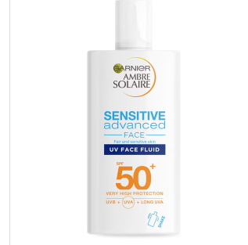

Garnier Ambre Solaire Sensitive Face Fluid SPF50
The surprise mega hit of summer 2020, this extremely thin, non-oily, quickly absorbing facial
sunscreen feels and behaves like one costing eight times as much. Beauty insiders are mad for
the stuff.

Eucerin Hyaluron Mist Spray
I love Eucerin, and to ignore this little-talked-about brand is to miss out on some excellent
clinical skincare in all categories and for all treatment needs, from dehydration to
pigmentation. I chose this because it has everything that is good and useful in a facial mist:
hyaluronic acid; glycerin; a can that stays cold enough for the proper amelioration of hot
flashes; and positively no irritants such as essential oils and fragrance. Spray liberally
during pregnancy, fatigue, heatwave or menopause.

La Roche-Posay Toleriane Ultra 8 mist
Not much from La Roche-Posay came within budget, but I'm delighted this product squeaked under
the line. The concept is simple and necessary: a spray-on face moisturiser to instantly soothe
and calm skin too upset for even fingertip touch. Suitable for rosacea, eczema, psoriasis and
other sensitive skins. Just spray whenever skin seems fraught, under or over makeup. Genius.